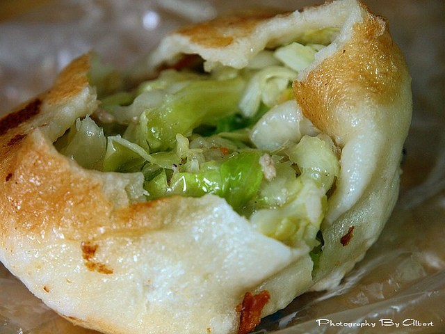
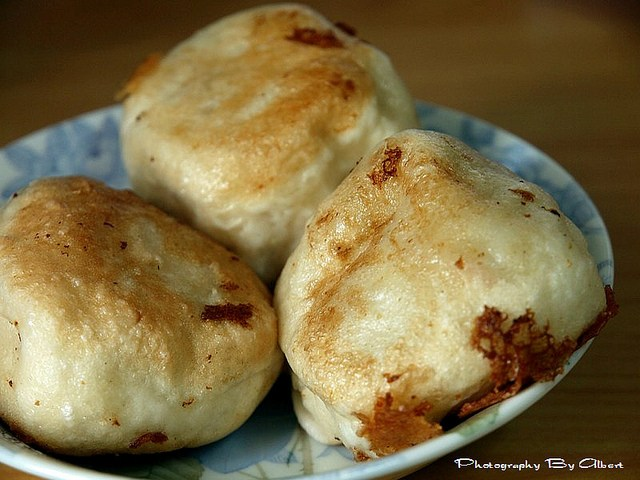
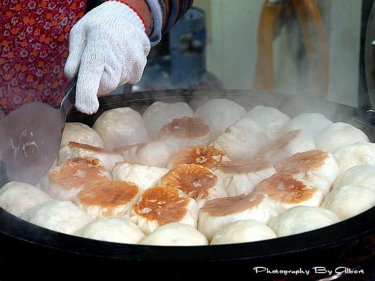
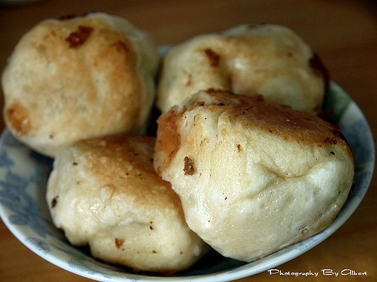
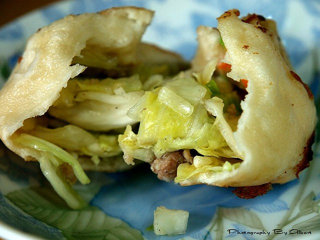
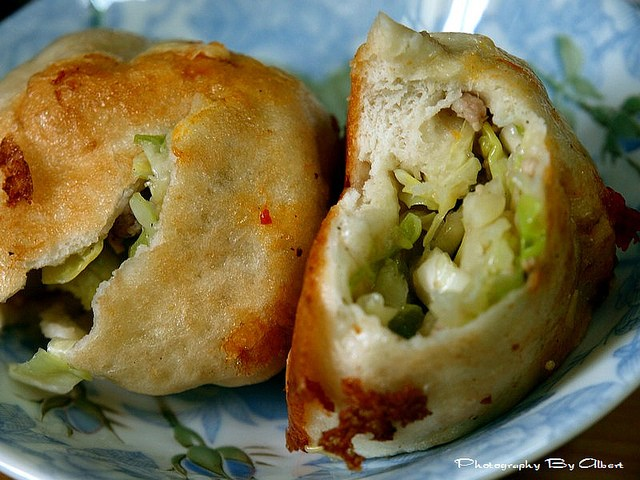
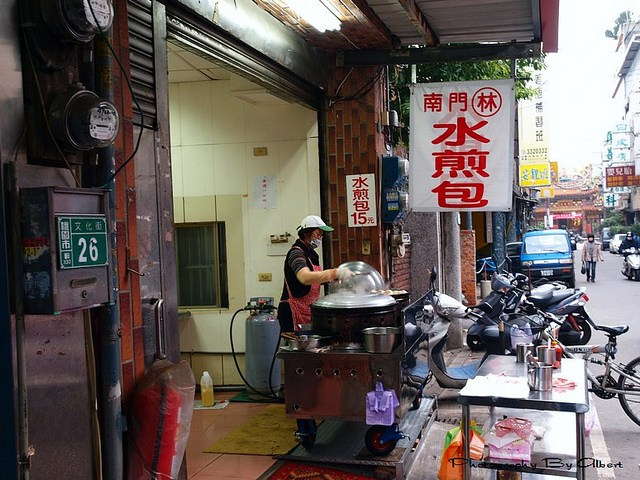

會發現這家「水煎包」店，是愛伯特最近看到許多網友介紹的，
不過愛伯特看網友介紹時，水煎包一個12元，想不到愛伯特購買時又漲價拉！
現在一個15元，不過這家的水煎包還蠻大顆個，而且這裡的水煎包都是現包現煎的歐！
據說這家在南門市場已經賣了30多年了，
從以前的小攤販到現在有店面，
由此可知這家賣的水煎包一定好吃，
否則怎可能會賣到賺到一間店呢？
另外愛伯特發現這家的水煎包就只有賣「高麗菜」口味的水煎包，
這最主要的原因，可能就如同愛伯特吃起來的感覺一樣，
看起來就很好吃的金黃色外皮，裡面包的餡料是滿滿的高麗菜，
吃起來脆脆甜甜的， 整體吃起來口感Q彈好吃！
如果還沒吃過的朋友可以找機會去吃看看歐！
PS：如果網友們還知道哪裡還有賣好吃的水煎包記得要告訴愛伯特阿！！！感恩！






【水煎包】桃園市．南門市場林記水煎包（香餡皮Q）
★餐廳地址：桃園縣桃園市文化街24號
★營業時間：早上
★回訪機會：★★★★（早上想吃水煎包時會優先考慮）
引用文章:愛伯特吃喝玩樂全記錄